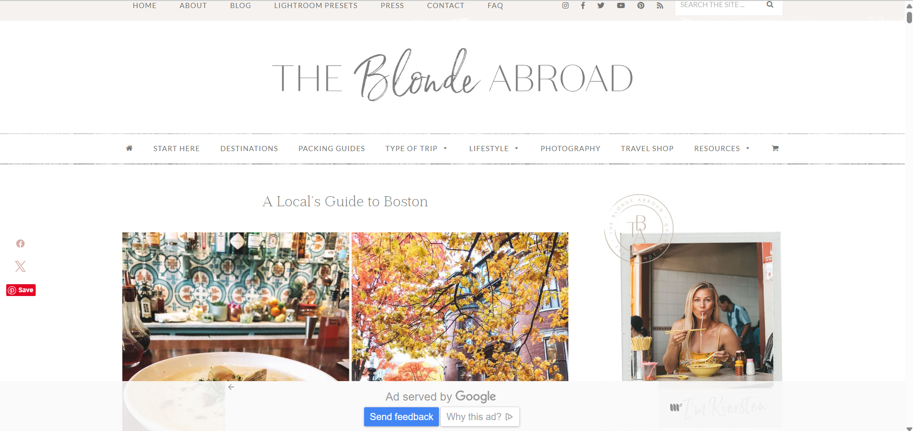

https://www.theblondeabroad.com/locals-guide-to-boston/
The site is set up like a regular blog. At the top there’s a menu and a search bar. The article itself is broken into sections with subheadings, so it’s not just a big wall of text. At the bottom there are links again, which makes it easy to keep moving around the site.
It’s pretty easy to use. The writing is in short chunks and the pictures help break things up. The links are clear and you know what they’ll do. On my phone it works fine, but it’s a lot of scrolling because the page is long.
The titles are big and easy to see. Subheadings split things up, and some bold text helps certain info stand out. The main text is a good size to read and the spacing keeps it from feeling cramped.
The site feels personal, like you’re reading advice from a friend. There are a lot of photos that make it colorful and give travel vibes. It’s pretty simple in design, but that works because the focus is on the pictures and the tips.